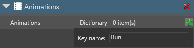
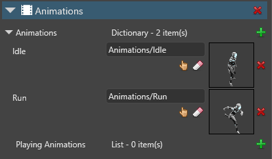

Set up animations
Beginner Designer Programmer
After you import animation assets, you need add them to an entity and play them with a script.
1. Add animation assets to an entity
In the Scene Editor, select the entity you want to animate.

Note
To animate an entity, the entity must have a model component.
In the Property Grid, click Add component and choose Animations.

Game Studio adds an animation component to the entity.
In the animation component properties, next to Animations, click
 (Add) to add a new animation to the library.
(Add) to add a new animation to the library.Type a name for the animation and press Enter.

Tip
When you play animations using scripts later, you use this name, not the name of the animation asset. To make identification easy, we recommend you give your animation the same name as the animation asset.
Click
 (Select an asset).
(Select an asset).The Select an asset window opens.
Browse to the animation asset you want to add and click OK.
Game Studio adds the animation asset to the entity.

You can add as many animations to the animation component as you need. The Property Grid lists them in alphabetical order.

2. Create a script to play the animations
After you add animations to an entity, you need to play them with a script.
Example script
public class SimpleAnimationScript : StartupScript
{
public override void Start()
{
Entity.Get<AnimationComponent>().Play("Walk");
}
}
This script looks for an animation with the name Walk under the animation component on the entity.
For more information about creating animation scripts, see animation scripts.
3. Add the script to the entity
In the Scene Editor, select the entity you want to animate.
In the Property Grid, click Add component and choose the animation script you want to add.
Game Studio adds the script as a component. You can adjust public variables you define in the script in the Property Grid under the script component properties.